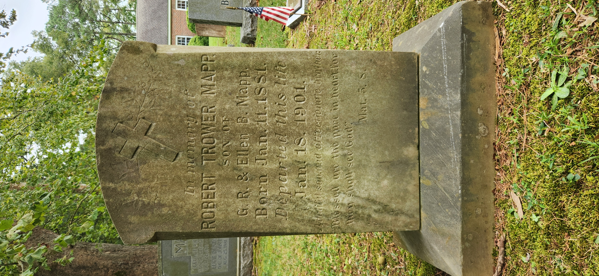

Dutiful son and affectionate brother.Blessed are the pure in heart for they shall see God. Mat. 5.8.

In Memory of Robert Trower MappSon of G.R. & Ellen B. MappBorn Jan 11 1881Departed this lifeJan 18 1901